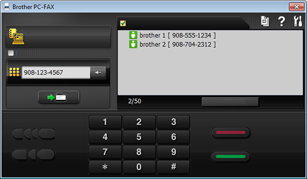

PC-FAX 송신중
| 1. | PC의 응용 프로그램에서 파일을 생성합니다. |
|---|
| 2. | 파일을 클릭한 다음 인쇄를 클릭합니다. 인쇄 대화 상자가 나타납니다. |
|---|

| 3. | Brother PC-FAX를 프린터로 선택한 다음 인쇄를 클릭합니다. PC-FAX 송신중 대화 상자가 나타납니다. |
|---|

| 4. | 팩스 번호를 입력한 다음 시작을 클릭합니다. |
|---|
| 0. | ControlCenter4 모드 화면이 나타나면 고급 모드를 선택한 다음 확인을 클릭합니다. |
|---|

| 1. | PC-FAX 탭을 선택합니다. |
|---|
| 2. |
|---|

| 3. | PC-FAX 송신중 대화 상자가 나타납니다. |
|---|
| 4. | 팩스 번호를 입력한 다음 시작을 클릭합니다. |
|---|---|
|